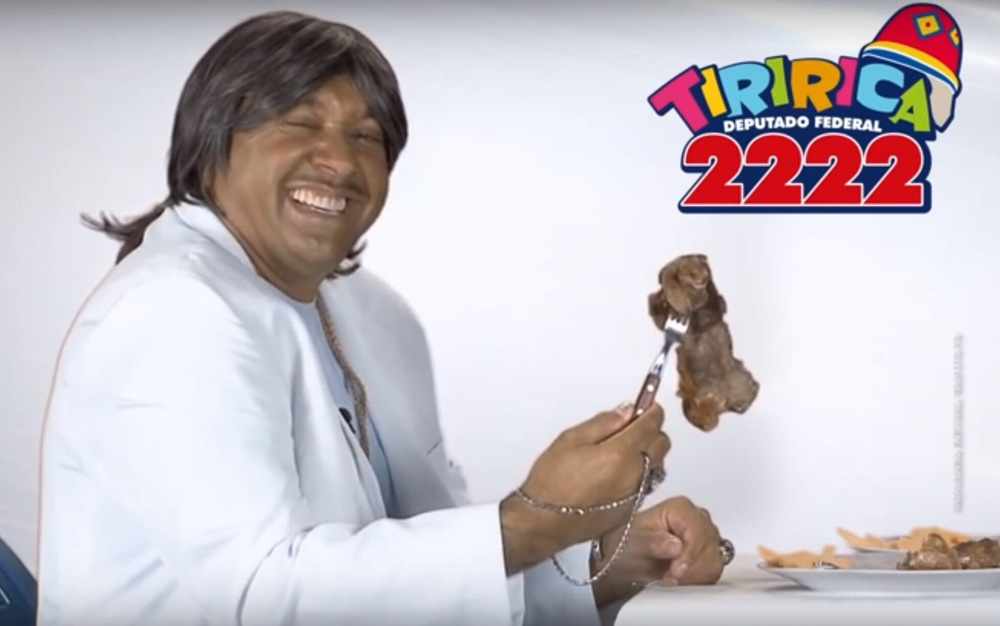
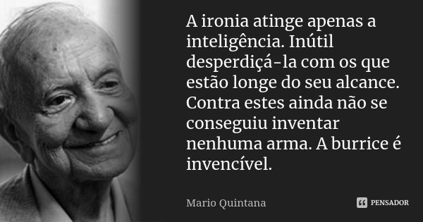

ironia
substantivo feminino
- 1. RETÓRICA (ORATÓRIA) figura por meio da qual se diz o contrário do que se quer dar a entender; uso de palavra ou frase de sentido diverso ou oposto ao que deveria ser empr., para definir ou denominar algo [A ironia ressalta do contexto.].
- 2. m.q. ASTEÍSMO ('uso sutil').
Fonte: Oxford Languages
Local de alta concentração
Um dos locais com maior concentração de ironia por m²
https://www.camara.leg.br/  